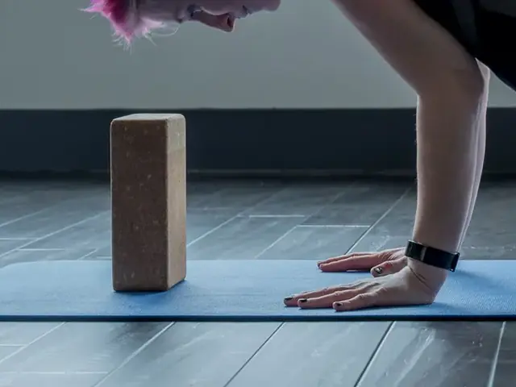
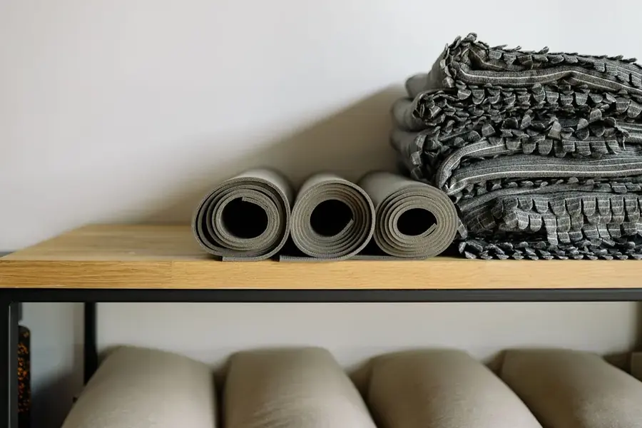
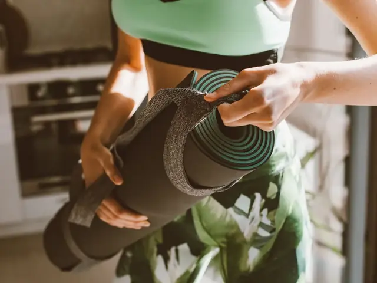
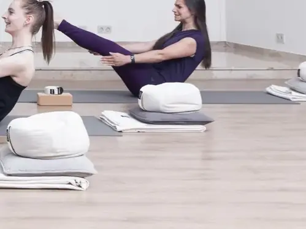
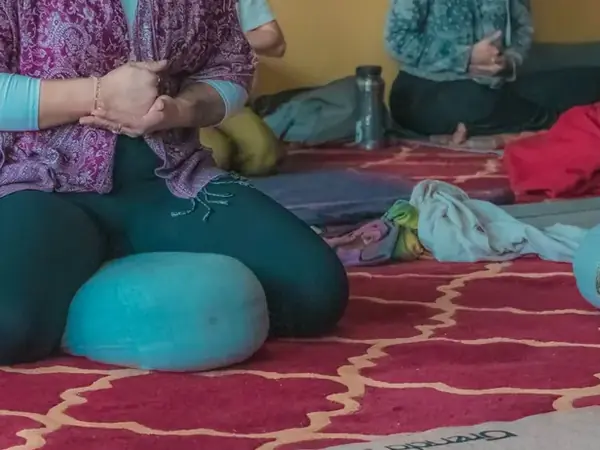
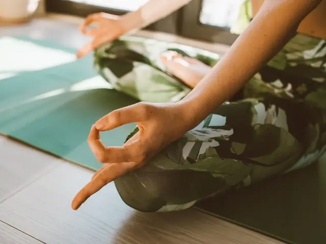
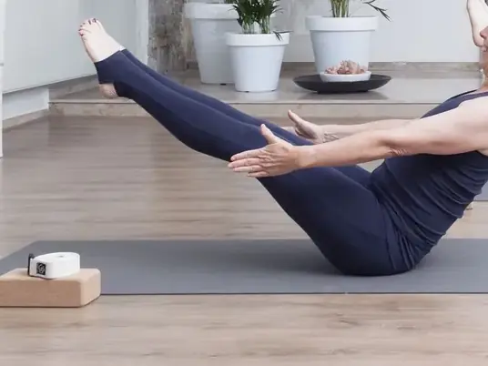
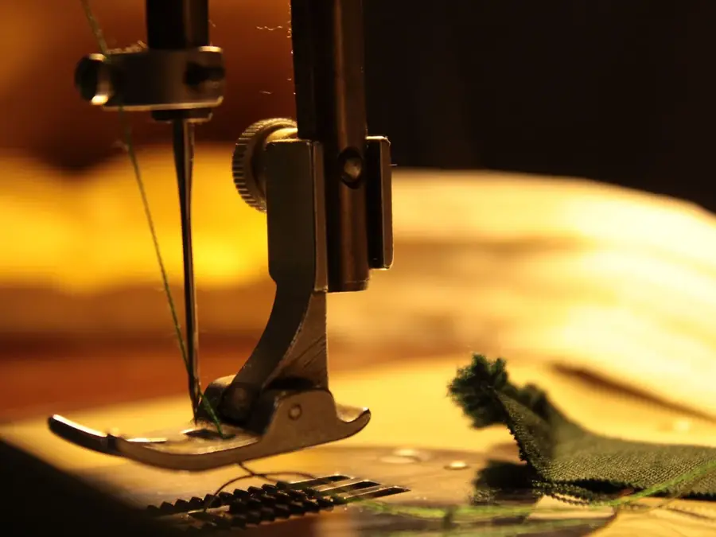
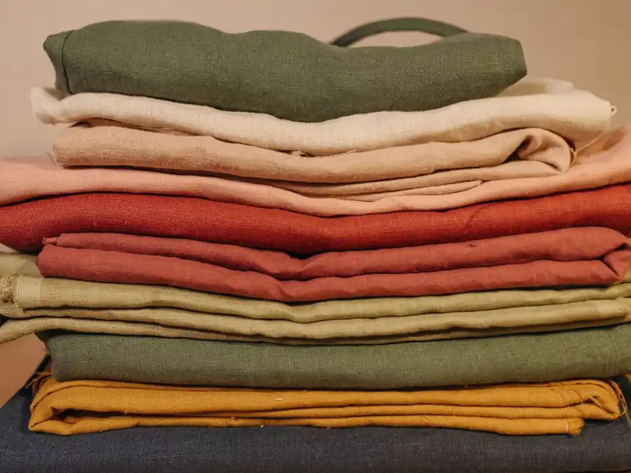
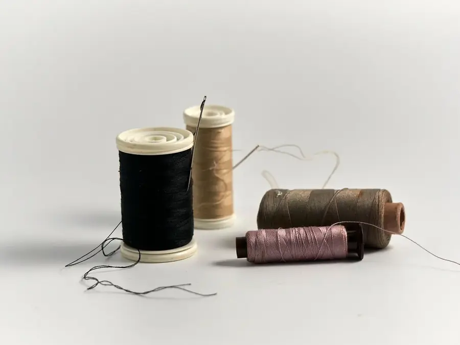

Cork block
9 x 6 in face, 4 in or 3 in tall, firm fine-grain cork. Block heights
Cork blocks, cotton bolsters and straps for home practice
Yoga props · made in Bend, Oregon
For people who roll out a mat in the living room, not a studio. Cork blocks, cotton bolsters and straps, rubber mats and buckwheat cushions, sewn and packed in a small Oregon workroom.
Six props, six plain prices, from $16 to $149. You pay nothing until we write back with your total.

On the shelf
Every price is for one piece, in US dollars. Shipping is worked out on the order form before you send anything.

9 x 6 in face, 4 in or 3 in tall, firm fine-grain cork. Block heights

1.5 in cotton webbing, steel D-rings, 6 ft or 8 ft. Strap lengths

Round or flat, 26 in long, firm cotton fill, zip-off cover. Bolster shapes

14 in across, 5 in tall, filled with buckwheat hulls. Cushion fill

72 x 24 in, 4 mm thick, textured on both faces. Mat details

Two cork blocks, one strap and one mat in a cotton sack. What is in the set
How the shop works
Zarnay Yoga is a small workroom in Bend, Oregon that makes and sells props for home practice, and nothing else. The bolsters and floor cushions are cut and sewn here, at a machine by the window. The cork blocks, the cotton straps and the natural-rubber mats are made to our measurements, then checked, finished and packed on the same table. Everything that is ready to ship sits on one oak shelf, which is why this site is drawn as one.
We keep the list short on purpose. Six props cover almost every home prop corner, and a short list means each piece can be described exactly: how tall it is, how firm it is, what the cloth is and how it is closed. You will not find a sentence here about what a prop will do for you. We sell objects, and we describe objects.
What we value is plain work: straight seams, square corners on a block, a zipper that is hidden under a flap so it never touches the floor. What we turn down is anything outside that work. The shelf further down this page that stands empty says exactly what that is.


What each prop is made of
Height, firmness and fabric for every piece. The content pages go further; this is the short version.
Fine-grain cork pressed into a dense block with a 9 x 6 in face. Choose the 4 in or the 3 in height. Edges are beveled by hand, and the surface is left bare, with no coating or print.
$24 each · See the details
Woven cotton webbing 1.5 in wide with a pair of welded steel D-rings. The tail is box-stitched so it cannot fray. Natural, sage or clay.
$16 each · See the details
A firm cotton-batting core inside a 10 oz cotton canvas cover. The round one is 9 in across, the flat one 6 in tall. Both are 26 in long with a carry handle at one end.
$68 each · See the details
A pleated round cushion, 14 in across and 5 in tall, filled with buckwheat hulls. A zipper under the side flap lets you take hulls out or add them to change the height.
$58 each · See the details
A 72 x 24 in mat of natural tree rubber, 4 mm thick, about 5 lb. The mat grip comes from a fine texture molded into both faces, not from a coating.
$96 each · See the details
Two cork blocks at your height, one strap at your length and one natural-rubber mat, packed in an undyed cotton drawstring sack that doubles as storage.
$149 the set · See the details
The Prop Finder
The finder follows a few plain rules, all written out in words, and prices the set as you click. It is useful with or without an order.
Total for the props $217
Two blocks, a strap and a mat are exactly what the Starter prop set holds, so they are listed as the set.
Shipping is added on the order form. Nothing is charged there either.
We make props and we post props. We do not teach, film or coach, we do not sell clothing, and for now our parcels stay inside the United States.
Questions
If yours is not here, write to props@zarnayyoga.com. A person answers within one working day.

The 4 in block is the one most people order, and it is the height the Prop Finder suggests for anyone 5 ft 4 in or taller. The 3 in block has the same 9 x 6 in face but is an inch lower and a little lighter, so it is easier to hold in a smaller hand; the finder suggests it under 5 ft 4 in. Both cost $24. If you are between the two, order one of each: turned on its three sides a pair gives you six heights.
Our rule is short. If you are taller than about 5 ft 10 in, take the 8 ft strap. Otherwise the 6 ft strap is long enough and leaves less tail to tidy away. The webbing, the D-rings and the $16 price are the same for both lengths.
Yes. Unzip the canvas cover, slide the inner bolster out and machine-wash the cover cold with similar colors. Hang it to dry and put it back on while it is very slightly damp so it sits tight. The cotton-batting core itself should not go in the machine; air it by a window instead.
A new natural-rubber mat does have a rubber smell when it comes out of the box. Unroll it and leave it flat in an aired room, out of direct sun, and the smell fades over one to two weeks. Natural rubber is latex, so if you avoid latex this mat is not the one for you.
Stocked props leave the workroom within 3 working days of payment. Bolsters and cushions are sewn in small runs, so allow up to 5 working days when one is in your order. Ground delivery then takes 2 to 7 working days in the lower 48 states. The shipping page has the costs.
Yes. The window is 30 days, counted from delivery, provided the prop is unused and clean. The postage back is yours unless the prop arrived faulty or damaged, in which case we do. Refunds go back to the original payment method within 5 working days of the parcel reaching us. The returns page covers exchanges too.
Ready when you are
The order form adds up your props and the shipping as you go. Sending it costs nothing; we reply with a payment link, and only then is there anything to pay.
props@zarnayyoga.com
Answered within one working day.
Monday to Friday, 9 am to 4 pm Pacific time. Closed on weekends and public holidays.
Bend, Oregon, USA. A workroom, not a storefront, so there is no counter to visit.
All 50 US states by tracked ground service. Start an order.